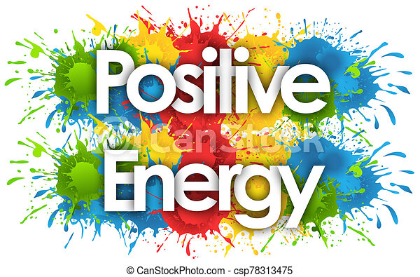

من خلال تجربيتي الشخصية في الكسل و الإكتئاب
و دخول الأوضة و قفل الباب
و مقاطعة الجميع و كتير من الوقت بيضيع
قررت أركز علي الطرق الإيجابية لتحسين النفسية

fig-1 positive energy
الطريقة الاولي : الصلاة
!بدأت بالصلاة و القرب من ربنا و المناجاه سبحانه أقرب إلينا من حبل الوريد ليه في بعدنا عنه نزيد ؟
و علاج القلق و الخوف معروف " إِنَّ الَّذِينَ آمَنُوا وَعَمِلُوا الصَّالِحَاتِ وَأَقَامُوا الصَّلاةَ
وَآتَوُا الزَّكَاةَ لَهُمْ أَجْرُهُمْ عِنْدَ رَبِّهِمْ وَلا خَوْفٌ عَلَيْهِمْ وَلا هُمْ يَحْزَنُونَ
"
fig1- الصلاة
الطريقة الثانية :العمل
إشغل النفسية هتكون 100 ميه حقيقي لما تحس إنك بتعمل حاجه مفيده و بسيطة هتفرق معاك بصمتك في الدنيا
مستنيك
fig-2 العمل
الطريقة الثالثة :الطعام
التأثير الإيجابي للطعام مفيش بعده كلام الاكلة الحلوة بينتج عنها أعلي إنسجام المهم يكون صحي و خالي من
الدهون و هتكون في المضمون
fig-3 الطعام
الطريقة الرابعة :الرياضة
الرياضة و التمرينات بتخلي العقل نشيط و الافكار السلبية تتبخر و تشيط